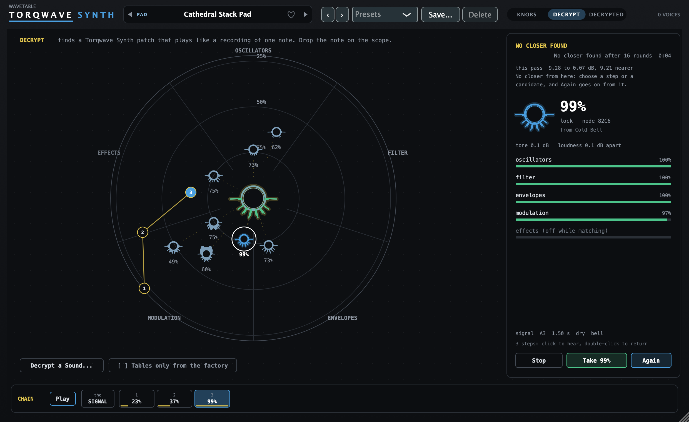
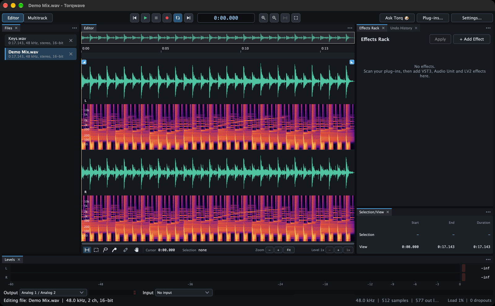

Edit it.
Build it.
Finish it.
An audio editor and a DAW in one app.
Free. Open source. No account.

The drum machine
is a sampler now.
Drop your own samples on any pad. Or bring in a Battery 4 kit you already own.
64 pads
16 velocity layers
5 effects on every pad
54 synthesized drum sources

3,743
patches.
A three-oscillator wavetable synth, in the box. Drop any sound on an oscillator and it becomes the wavetable.

Play it one note.
It builds the patch.
Give the synth a recording. It finds a patch that plays like it, and shows you how it got there.

Down to the
spectrum.
Select by box, lasso or brush. Heal, de-noise, de-click, repair clipping. Then master to a delivery spec.

Say what
you want.
Read the plan.
Press Apply.
It works with a language model you run yourself. Nothing changes until you say so, and one undo takes it all back.
→Your machine. Your model.
→No cloud. No AI company in the loop.
Free.
No account.
No subscription.
Open source. An editor, a DAW, a wavetable synth, a sampler and a drum machine in one download.
→macOS, Windows and Linux
→Hear 1,123 clips before you download
bobclawblaw.github.io/torqwave